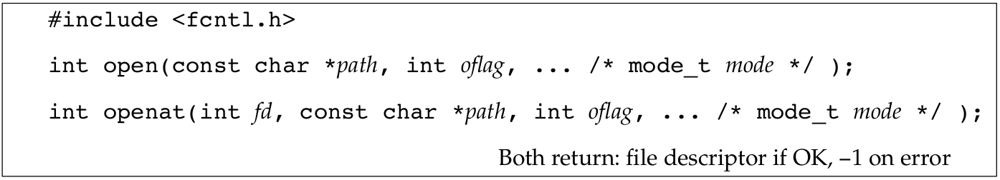

文件I/O
Table of Contents
1 介绍
本文主要讨论UNIX系统的文件I/O函数，大多数文件操作仅需通过五个函数就可以完成：open，read，write，lseek以及close．后面会看到各种各样的buffer大小会对read以及write函数产生影响．
本文所描述的函数都是unbuffered I/O，与之相对的是标准I/O函数，后面会介绍．词语unbuffered（无缓存）对应每个read和write都会调用内核里的系统调用．
当涉及到在多个进程间共享资源时，原子操作的概念就变得重要起来．在open函数的参数里会关心文件相关的原子性，就会引出文件是如何在多个进程间共享以及牵涉到的内核数据结构．后面还会介绍下其它函数．
2 文件描述符
对于内核来说，所有打开的文件都可以通过文件描述符来引用到，一个文件描述符是一个非负的整数．当打开或新建一个文件时，内核都会返回一个文件描述符给进程．当在读写文件时，传给read或write的参数是由open或creat函数返回的文件描述符．
传统上，UNIX系统的shell将进程的标准输入关联到文件描述符0，1关联为标准输出，2关联标准错误．这种惯例被很多shell以及应用呈现使用，但这不是UNIX内核的特点．
使用定义在<unistd.h>里的STDIN_FILENO，STDOUT_FILENO以及STDOUT_FILENO来代表0，1和2程序的可读性会更好．
3 open和openat
一个文件可以通过open或openat函数来创建：

Figure 1: open和opeanat函数
图里最后一个参数显示为…，这是说剩下的参数个数以及类型都是不确定的．对于这两个函数来说，最后一个参数在新创建文件时会使用，这个参数就是注释里的mode参数．
path参数是要打开或创建的文件．这两个函数有多个选项，由oflag参数指明，该参数由下面来自<fcntl.h>的常量以OR的形式组成：
O_RDONLY：以只读打开．
O_WRONLY：以只写打开．
O_RDWR：以可读可写打开．
O_EXEC：以只执行打开．
O_SEARCH：仅搜索打开（用于目录），本系列介绍的操作系统没有支持这个标志．
前面的五个标志，有且仅能有一个存在，而对于下面的标志则是可选的：
O_APPEND：每次写都写在文件尾．
O_CLOEXEC：设置文件描述符的FD_CLOEXEC标志，后面有文章会详细介绍．
O_CREAT：如果文件不存在就创建它．该选项需要open的第三个参数（openat的第四个参数），就是mode参数．该参数指明了新创建文件的访问权限，后面会介绍如何如何指定mode参数以及使用umask可以改变它的值．
O_DIRECTORY：如果path指定的不是一个目录就生成错误．
O_EXCL：在O_CREAT指定的情况下，如果文件已经存在了，就生成一个错误．测试文件是否存在以及如果不存在就创建是原子的操作，关于原子操作后文会有更详细的介绍．
O_NOCTTY：如果path指向的是一个终端设备，那么不要把这个设备文件作为控制终端分配给当前进程．后文还会介绍关于控制终端的更多细节．
O_NOFOLLOW：如果path指向的是符号链接，生成一个错误．其它系列文章会介绍符号链接的细节．
O_NONBLOCK：如果path指向一个FIFO，或者一个块特别文件，或者字符特别文件，该选项会对打开的文件以及随后的I/O设置非阻塞模式．
O_SYNC：对于每一个write操作都等待物理I/O操作的完成．
O_TRUNC：如果文件存在，并且以只写或读写打开成功了，就把长度截短成0．
O_TTY_INIT：当打开一个没有打开过的终端设备时，给termios参数设置值，后面有文章在讨论终端I/O时，会介绍termios结构体．
由open和openat返回的文件描述符担保是最小未使用的描述符．有些应用软件会利用这一事实，在标准输入，或标准输出，或者标准错误上打开文件，然后关闭它．比如先关闭标准输出，然后再打开另一个文件，这样就知道了打开的文件一定是使用描述符1．后面在介绍dup2时，会看到一个更好的方式来做到在给定的描述符上打开文件．
open和openat函数的不同在于有无fd参数．这有三种可能性：